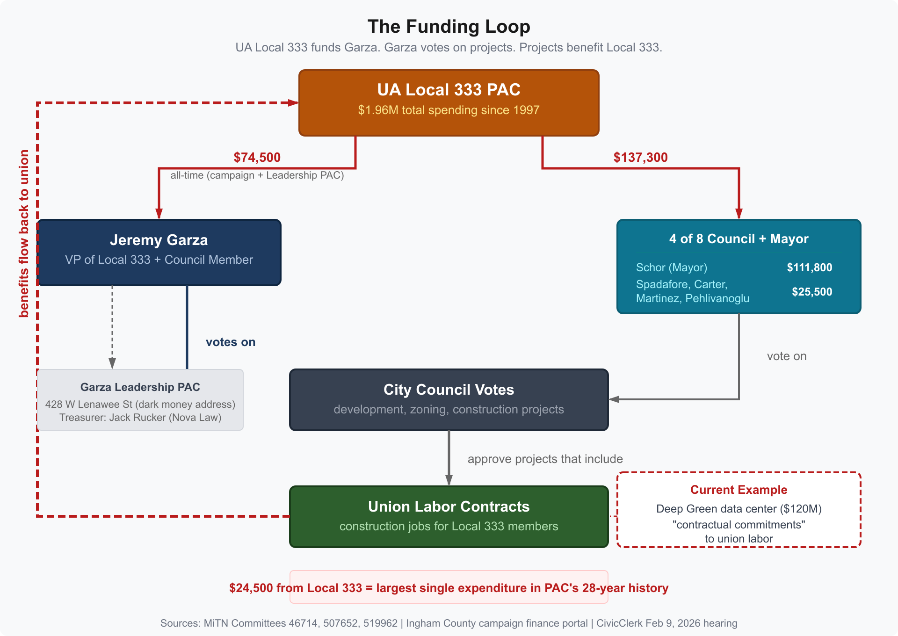

Lansing: The Union VP Who Votes on Union Projects
A U.S. Department of Labor filing confirms that Garza is a salaried employee of the Michigan Pipe Trades Association, earning $126,742 per year as "Political Lead." See The Garza Conflict, Spelled Out for full details.
Jeremy Garza is Vice President of UA Plumbers & Pipefitters Local 333 and a $126,742-per-year salaried employee of the Michigan Pipe Trades Association, the statewide body coordinating 14 UA locals. He is also an At-Large member of the Lansing City Council. In 2025, he raised $48,050 from 16 itemized contributions. Every one came from a union or PAC. Zero came from individual donors. Local 333 alone gave $24,500, more than half his total. He has never recused from a vote on a development project.
LANSING, Mich. — UA Local 333 is a plumbers and pipefitters union representing building trades workers across mid-Michigan. When a construction project comes before the Lansing City Council, Jeremy Garza votes on it. When that project includes union labor contracts, Local 333 stands to benefit. When Local 333 benefits, it writes checks to Garza's campaign. The cycle repeats. Garza is not just a Council member who receives union support. He is a $126,742-per-year salaried employee of the statewide pipe trades political operation, where his own LinkedIn says he "actively engages in shaping policies and legislation that benefit the plumbing & pipefitting industry and its workers," and an elected officer of the local union.
The Deep Green Technologies data center is the most visible current example. The $120 million project on city-owned land includes explicit "contractual commitments" to union labor, announced at the February 9, 2026 Council hearing. Local 333 Business Manager Dustin Howard is among the union leaders publicly supporting the project as part of a 13-organization labor coalition (WILX, Feb 10). But the conflict is not limited to one project. Every development decision that involves building trades labor is a decision that directly affects the financial interests of Garza's employer.
The Money
Garza's 2025 pre-primary filing (MiTN Committee 46714) lists 16 itemized contributions. All 16 are from unions or PACs. No other Lansing City Council candidate in the 2025 cycle had zero individual donors.
| Donor | Amount |
|---|---|
| UA Plumbers & Pipefitters 333 | $24,500 |
| Sheet Metal Workers 7 | $7,500 |
| Pipefitters 636 | $2,500 |
| MI Laborers | $2,500 |
| IBEW | $2,000 |
| Monroe Plumbers | $2,000 |
| Operating Engineers 324 | $1,500 |
| MI Carpenters | $1,000 |
| LRC-PAC (Chamber) | $1,000 |
| IUPAT | $1,000 |
| W. MI Plumbers 174 | $1,000 |
| Sprinkler Fitters 669 | $500 |
| Teamsters 243 | $500 |
| Lansing Firefighters | $500 |
| Total | $48,050 (100% union/PAC) |
The $24,500 from Local 333 is the largest single expenditure in the union PAC's 28-year filing history (MiTN Committee 507652).

Local 333 Across Lansing Government
Garza is not the only recipient. Local 333 PAC has spent $1.96 million since 1997. In the current Lansing government, the union has funded five of eight sitting Council members and the mayor:
| Recipient | All-Time Total | Source |
|---|---|---|
| Andy Schor (Mayor) | $111,800 | MiTN (6 committees, 2006-2025) |
| Jeremy Garza | $74,500 | MiTN (4 committees, 2017-2025) |
| Peter Spadafore | $13,000 | MiTN + Ingham County portal |
| Tamera Carter | $5,000 | Ingham County portal |
| Clara Martinez | $5,000 | Ingham County portal |
| Trini Pehlivanoglu | $2,500 | Ingham County portal |
The union's spending has more than doubled since 2020, from an average of $79,000 per year (2012-2019) to $152,000 per year (2020-2025). Peak spending was $180,418 in 2025.
The Leadership PAC
Garza also maintains a Leadership PAC (MiTN Committee 519962) registered at 428 W Lenawee St, the law office used by 10+ political entities in a documented dark money network. The PAC's treasurer is Jack Rucker of Nova Law PLC (successor to the Law Office of Reid Felsing). Its visible receipts total $25,000 or more, all from UA union affiliates. Its expenditures include $2,250 to the Law Office of Reid Felsing and $750 to Nova Law PLC for compliance services.
The same address, treasurer, and record keeper serve the Lansing Future PAC (MiTN Committee 521284, dissolved), the Lansing Future Fund (LARA 803132254, a 501(c)(4) that does not disclose its donors), and at least eight other political entities. (See: How the Chamber's PAC Shapes Who Governs and What Gets Built.)
Deep Green and Union Labor
At the February 9, 2026 Council hearing, Deep Green representatives described "contractual commitments" to union labor for the $120 million data center project. Approximately 90 people gave public comment, the majority opposed. A coalition of 13 labor organizations and the Lansing Regional Chamber publicly urged approval (WILX, Feb 10; Chamber announcement, Feb 10). Local 333 Business Manager Dustin Howard was among those publicly supporting the project.
The project promises union construction jobs, ongoing maintenance requiring licensed plumbers and pipefitters, and expansion of the building trades labor pipeline in the Lansing region. These are direct financial benefits to UA Local 333 and its members. Garza is their Vice President.
After Council Member Deyanira Nevarez Martinez raised a procedural objection, Deep Green withdrew and resubmitted the rezoning petition. On March 3, 2026, the Planning Commission approved the resubmitted rezoning 5-2. The land sale hearing is scheduled for March 23; the conditional rezoning hearing is scheduled for April 6, 2026.
Garza has made no public statement on Deep Green. No evidence of recusal from any vote involving the project has been found in CivicClerk Council meeting records (search "Garza" in February 9, 2026 and March 3, 2026 minutes), or in news reporting.
The Eastern High School Precedent
This is not the first time Garza's union ties and his Council votes have pointed in the same direction. In July 2024, Garza voted to urge UM-Sparrow to preserve the century-old Eastern High School building. When area labor unions came out against a historic district study, Garza reversed his position.
When City Pulse interviewed him about the reversal, Garza said: "I was not aware of the unions getting involved in that." The City Pulse editorial board described the claim as lacking credibility and attributed the reversal to union pressure and Garza's "financial dependence on union membership." The editorial, published ahead of the November 2024 election, was titled "Send a message: Defeat Garza."
Garza won re-election.
The Bidding Ordinance
On August 25, 2025, Garza voted to pass Ordinance #1339, which changed how the city evaluates construction bids. The ordinance added Section 206.02(a)(1)I to the Lansing Codified Ordinances, creating new criteria for determining the "lowest and most responsive and responsible bidder" on construction contracts.
The new criteria require bidders to document participation in a USDOL-registered apprenticeship program, evidence of an OSHA 10-hour construction safety course for all workers on site, evidence of employer-sponsored healthcare benefits, and evidence of "structured retirement plans, including pension or other employer provided plans."
Union contractors maintain registered apprenticeship programs. Union training centers provide OSHA certification. Union collective bargaining agreements include employer-sponsored healthcare and pension plans. Non-union contractors commonly use on-the-job training rather than registered apprenticeships and may not offer pension plans.
The July 28 public hearing reflected this divide. Three Local 333 officers testified in support: Business Manager Dustin Howard ($161,452 total compensation per the union's LM-2 filing, DOL File 541-123), Business Agent Jason Brown ($137,362), and Executive Board member Deshon Leek. Non-union contractors testified against it. Garza gave the public hearing overview. On August 25, the ordinance passed 7-1 on a roll call vote (CivicClerk Event 6831). Garza voted YEA and moved to give the ordinance immediate effect. Council Member Jackson cast the sole NAY vote.
Six weeks later, the Council passed Ordinance #1343 (October 13, 7-0), raising the competitive bidding threshold from $15,000 to $31,000. Garza again moved immediate effect. Contracts under $31,000 no longer require formal competitive sealed bids.
No Recusals
A search of CivicClerk Council meeting minutes from January 2024 through March 2026 (52 meetings) found no evidence that Garza has recused himself from any vote on a development project, zoning decision, construction bidding rule, or construction-related matter. He voted YEA on every development item where a roll call was recorded. He personally motioned at least four development items, including Brownfield Plan #86 (820 W. Miller Road).
Lansing's City Charter (Section 5-505.3) states: "No elective officer, appointee or employee of the City may participate in, vote upon or act upon any matter if a conflict exists." The Charter's Ethics Ordinance (Chapter 290.03) prohibits the use of official position for private gain.
The Broader Pattern
Local 333 PAC's $203,161 in all-time payments to Grassroots Midwest for "Communications Consulting" adds another layer. The Schor campaign paid the same firm $188,000 for consulting, printing, mail, and digital services in the same period (MiTN). Garza's Leadership PAC, the Lansing Future PAC, and a Felsing-administered 501(c)(4) called Michigan Deserves Better also paid Grassroots Midwest. One consulting firm serves the mayor, the union, the Council member, and the dark money entities simultaneously.
Local 333 PAC also contributed $9,500 to three entities at 428 W Lenawee St, the dark money address: $5,000 to the Lansing Future PAC, $3,000 to Vote Yes Lansing 2025 (a charter amendment campaign for "best value" procurement that directly benefits building trades), and $1,500 to Prosperous Eaton County. The union, the dark money network, and the political consulting apparatus share financial infrastructure.
None of this is illegal. Michigan does not prohibit a union officer from serving on a city council. There is no law requiring recusal from votes that benefit the official's union. There is no prohibition on a PAC funding 100% of a candidate's campaign.
But when a Council member's entire campaign is funded by unions, and that Council member holds a leadership position in the union that gave the most, and the projects before the Council include contractual commitments to union labor, the question is straightforward: whose interests does the vote represent?
Methodology
This analysis is based on publicly available campaign finance records from MiTN (Committees 46714, 507652, 519962, 521284, and 000516), the Ingham County campaign finance portal, the UA Local 333 website, LARA corporate records, Council hearing records from the Lansing CivicClerk portal (February 9, 2026, July 28, 2025, August 25, 2025, October 13, 2025, and March 3, 2026), UA Local 333 LM-2 Annual Report (DOL File 541-123, FY2025, OLMS), Lansing City Charter (PDF), and news reporting from WILX, WKAR, Michigan Advance, Fox 47, and City Pulse. All-time contribution totals for Local 333 PAC are computed from 1,123 MiTN expenditure records spanning 1997-2026. The $24,500 single contribution is verified as the largest single expenditure in the PAC's filing history. County portal data was retrieved February 2026 and includes local-race contributions not visible in MiTN. Recusal search covers 52 Council meeting minutes from January 2024 through March 2026, downloaded from CivicClerk.